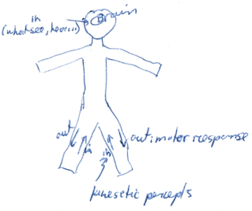
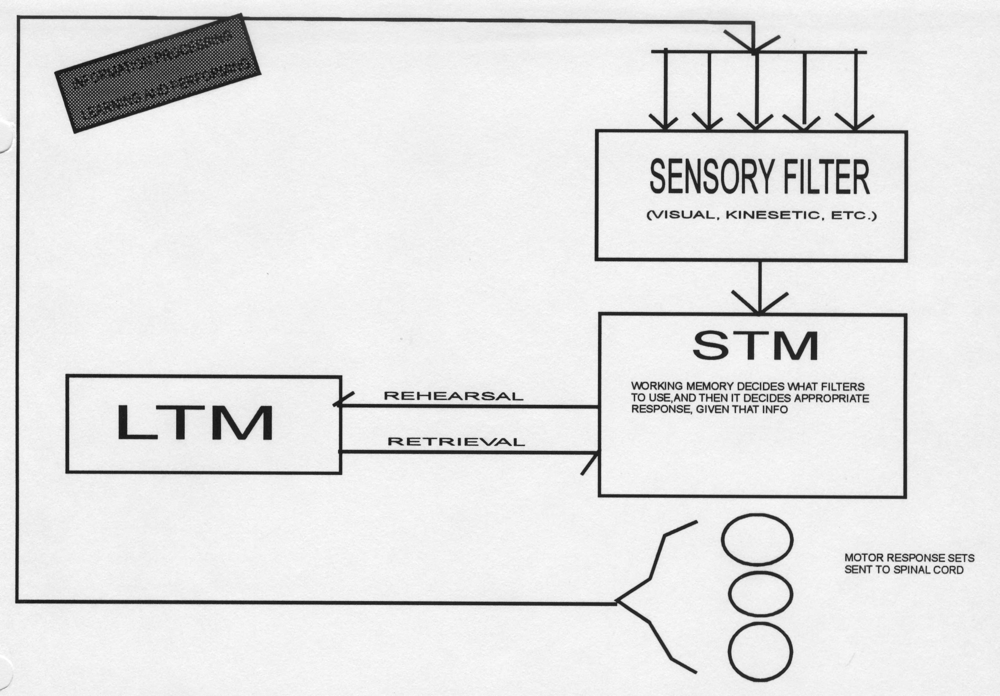
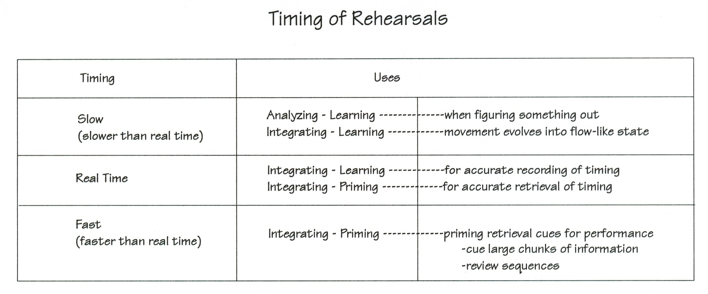
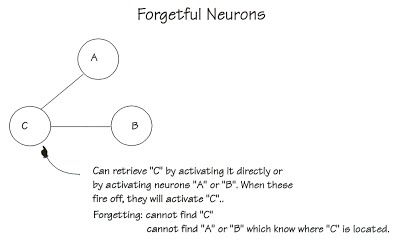
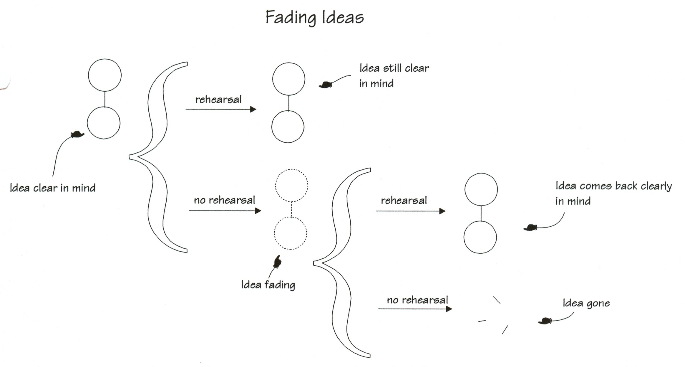
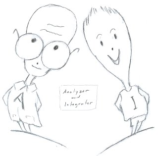

|
ch4 Self-Directed Coacing Manual
ch 4) HOW LEARNING OCCURS IN BRAIN AND NERVOUS SYSTEM
COGNITIVE PSYCHOLOGY FOR SPORT This chapter uses theories and methods from the field of cognitive psychology to understand sport. The generally accepted terms in field of cognitive psychology are as follows. Cognition is the acquisition of knowledge using mental skills. So what are mental skills? The ones commonly studied are pattern recognition, attention, visual memory, language, problem solving and decision making. So skills are processes. Cognitive psychology refers to all processes by which sensory input is transformed, reduced, elaborated, stored, recovered and used. Indeed, our brains analyze the world in systematic way. We take in information, we sort through the information received, we store the information in memory systems, and then we later use this stored information. Loosely speaking, we are a lot like computers, except we are parallel processors, instead of sequential ones. This means we can process information extremely fast, but at a lose of accuracy. The later is a humbling fact, that we should always be checking. Lets look again at how our brain analyzes. First we take in information. This is called sensory input. Cognition begins with contact with the external world. The contact starts when we pay attention to something, and then recognize a pattern in it. Then we sort out the information received, resulting in either reduction or elaboration of this information. Reduction occurs when information is lost. Elaboration occurs when we add to sensory input. For example, when we meet a friend, we recall shared experiences. This meeting is now added to these past experiences. After the sensory input has been filtered, it is ready to be stored in various memory systems. Encoding is first stored in short term memory. If it is there long enough, it becomes long term memory. Storage in long term memory does not guarantee recovery. Retrieval processes and strategies discussed in this manual may increase the probability of pulling them out. Once the information is perceived, stored and recovered, it can be used for decision making and problem solving. Cognitive psychologists have studied many theoretical systems in how our brains analyze and pass information. The most practical for sport is the information processing approach. This discipline attempts to show how we transform information between stimulus (S) and response (R). If a person has problems performing a task, then the information processing approach may identify which stage is the primary source of difficulty. Cognitive psychology also studies higher cognitive processes. The elite athlete performing a highly complex and skilled sport uses higher cognitive processes. The discipline called cognitive science is the study of intelligence in humans, computer programs and abstract theories, with the emphasis on intelligent behavior as computation. It attempts to unify views of thought developed by studies in psychology, linguistics, anthropology, philosophy, computer science and other neural sciences. Memory types
Recall, to be able to use information, it needs to be stored. Lets consider the five main memory types. They are called, semantic, implicit, remote, working and episodic. They all decay over time. I listed them in order of most durable to least durable. The operational definitions of these memories are as follows. Semantic memories tell us what words and symbols mean. They are easy to remember. We can add words to our semantic memories till death. They are very resilient. Implicit memories are skills that depend on automatic series of movements, like riding a bike, swimming, driving a car. They are also conditioned responses, like reaching for a handkerchief when we sneeze. They are very resilient. Remote memories are data we collected over years, from schools, magazines, conversations and the like. They appear to diminish with age, but it could be a retrieval problem, such as interference. Interference occurs because we are continuously sorting through the constant accumulation of information. The new information, can skew or block the old. Working memories, also called short term memories (STM), last only a few seconds. It is the reception area for all our long term memory banks. It quickly decides what to hold onto, and which memory bank it will go too. We experience our working memory in action all the time. When we remember the first part of a sentence, as we hear the end, it is in working memory. When we do things simultaneously, like riffling through our mail, talking on the phone, and catching attention of colleague without losing our place, it is because it is all in our working memory. Our working memories slow down with age. This can start at forty to fifty years. Episodic memories, are recollections of recent experience. Remembering what movie we saw last week, or where we put our glasses. It can start showing weakness in thirties, but can become more noticeably weaker in fifties.
INFORMATION PROCESSING MODEL FOR SPORT Background and Assumptions Theoretically, the information processing model is a conceptualization that psychologists have created to show the process of how learning occurs in our brain. There is no localized learning center in the brain. Physically, learning occurs when neurons change structure, as explained in chapter 3. There are some localized hubs through which selective information flows, and our largest long term storage device containing all our sport knowledge is located in our frontal cortex, our forehead. Now lets explore the information processing model on a more practical level. There are areas in the nervous system and brain that can be easily changed, and other areas that cannot. The information processing model shows how events in the brain promote change; specifically, how the brain receives and uses information. Our brain uses knowledge we already have along with what we perceive around and within us, in coordinating everything that happens to us. By understanding how the information processing model works, we can gain control over our learning and performing processes, by identify the stage of primary difficulty or progress. Our brain influences all our body functions, and these in turn influence how our brain works. Hence, by understanding how our mind works, we can use this as another frame of reference from which to understand and coach athletes. In this section I will have many highly schematized diagrams of neural firing patterns that develop through the learning process. Learning is defined as the association between any 2 stimuli. Recall from chapter 3 that neuron signals leave the brain, tell the spinal cord what to do, the spinal cord tells motor neurons what to do. Then the sensory neurons send information back to the brain. Lets now start looking at this more cognitively, meaning what we are thinking what is being transported by the chemical neuron messengers. My “Stick Man”, figure 4-1, takes in sensory information, what it sees and hears, as well as its kinetic percepts. At the same time it’s brain sends out motor, or movement, information. Figure 4-1: Stick Man figure 
The Information Processing Model Now I will describe the "Information Processing Model”, figure 4-2. There is no physical location in the brain that holds the various parts of the information processing model. The model describes the brain's overall capacities and limitations in processing information. We will work through the model from top to bottom. Figure 4-2: Information Processing Model 
At the top are the sensory filters. They work as follows. There is a constant stream of sensory information received by the brain. All the sensory information passes through filters. Some of these filters are inherent and some are learned. We are born with inherent sensory filters. We do not have too much control over how they develop. Inherent sensory filters provide us with information about sensitivity to pain, sensitivity to pressure, certain visual and auditory functions. The reason that we have these filters is to dull the incomprehensible amount of information that our bodies receive at any given point in time. These filters also pick out relevant information for the current situation. People with malfunctioning inherent sensory filters have enormous difficulty in even the simplest life tasks. We also have learned sensory filters which we develop over time by doing a task. We learn how to respond to different course situations or plays with ease as our learned sensory filters evolve. The reason that this happens is because our brain is wired in to protect us from danger. Events are interpreted as dangerous or not dangerous by our learned sensory filters. As we master skills, our learned sensory filter isolates important stimuli for sport, from the ones that cause distraction. So far in the information processing diagram I've explained that we receive constant influx of sensory information, which is then passed through inherent and learned sensory filters. This information is then sent to the working memory which is also called the short term memory (STM). The working memory develops a "perception" of what is happening, and decides what to do next. It decides what sensory filters are to be used, and what knowledge should be used from the long term memory. It then computes this information and from that, decides what to do next. It is like the processor in a personal computer. The working memory is very small. It can hold only 5 units of information, give or take 2 units. So a person can have a working memory as small as 3 units or as large as 7 units of information. Why is this important to know? Because we may have problems in performing some tasks because of "information overload". When the working memory is asked to do too many things, its performance is unpredictable. Long term memory (LTM) contains knowledge we have learned. Game plays, course information, sequence of events to be performed, are all stored in long term memory. There is no limit on amount of information the long term memory can hold. It can be described analogous to a hard drive in a personal computer, in that once you have stored something in your hard drive, it can be retrieved as long as you know where it is and how to access it. Long term memory has declarative memories and procedural memories. Declarative memories are factual information. They can be episodic or semantic. Episodic memories are temporally dated recollections of personal experiences, analogous to a diary. Semantic memories are general knowledge that is not associated with time or context. It is analogous to an encyclopedia. The other type of memory subsystem are procedural memories. These are memories of how we do things, such as actions, skills and operations. Unfortunately, there is little theory of how we store procedural knowledge. This is mostly because of methodological problems which I touch on in my discussions on attention. Clearly, the storage and retrieval of procedures is the main interest for athletes, and hence this manual. I will infer for this chapter that declarative information is stored the same way as procedural information with regards to how neurons change physically and chemically. The difference between declarative and procedural memories is that procedural information is stored in different parts of the brain and in different memory pathways from declarative memories. Once information has been processed in the working memory, responses are outputted in chunks. The responses may take place in our mind only, or it may be accompanied by a body response. In the mind we may respond to a situation by thinking something or feeling something emotional. In the body, the response may be a change in internal physiology, like increase in arousal, or it may take the form of actual body movement. In summary the information processing model demonstrates the working memory as the one making the decisions on what filters and other information from the long term memory are to be used, and decides on how to respond. So the working memory develops a "perception" of what is happening, and then responds. Why would the working memory want to do all of this in the first place? The need to respond is based on the biological and physical need for equilibrium. As things change around us, we have no choice but to change ourselves to maintain equilibrium. The motive to achieve equilibrium is a fundamental law of nature. It is principle in all physical aspects of nature as well as aspects of human emotion. So far I have described the structure and pathways of the information processing model. Now I will describe how it works. Lets start by looking at how the model works when we are learning something. According to the information processing model, sensory information passes through sensory filters and enters the short term memory. Here it is combined with other knowledge retrieved from long term memory. The longer this information is in short term memory, the better it is stored in long term memory. In other words, there is more time to file this information into Long term memory. Once information is in the long term memory, it is learned. Theoretically, information in long term memory can be retrieved as long as you know where it is. It is important to file things in a logical way, so you can retrieve it easily in the future. Now, assuming we have learned our sport, lets look at how the information processing model works when we are doing, performing, something. Our working memory develops a perception of what is happening and then decides how the body will respond to this information. This motor information is outputted in chunks, which travel down the spinal cord to target areas that would understand the information. These areas, in turn, tell the peripheral neurons and limbs what to do. The peripheral neurons have direct contact with muscles and other cells in the body that are not part of the central nervous system. They can tell your muscles to contract or relax. In sport, it is very important that the right sensory filters are retrieved from the long term memory, as these are paramount in dictating whether you will achieve a state of flow in your movements. If the wrong filters are retrieved, strange things can happen. A humorous example of my own predicaments, concerns my bilingualism. Sometimes I have been confused as to why I cannot understand something I am reading. This was resolved when I realized that I was reading in the wrong language. In other words, I was looking through the wrong filter while reading. When the right filters are retrieved, a task is easy. The environment that we do our activity in is usually enough to get the right filter to kick in. Usually when a downhill skier starts sliding, the appropriate sensory filter is retrieved by working memory. We can improve the chance that the appropriate filter is retrieved by using priming techniques, discussed later. In summary, the information processing model, illustrates a steady stream of sensory input, which is then processed, producing chunks of output. Processing in the working memory works much the same as with a personal computer: good stuff in, good stuff out, garbage in, garbage out. Our success can be described by our ability to get the good stuff in and good stuff out.
LEARNING AT NEUROLOGICAL LEVEL Understanding the underlying principles of how learning occurs in the brain and nervous system, gives us opportunity to control this learning process. Broadly speaking, the human brain is made of neurons. When neurons change structure, the result is learning. By default the human brain is always learning or changing structure. Recall figure 3-9. Association Specifically, learning occurs when two or more things are in the short term memory, also called working memory, at the same time. The events in the memory are said to be "associated" together. This association causes changes in the structure in the brain. In other words, learning occurs when neurons are associated in a different manner. The longer the same events are in working memory at the same time, the better chance they are associated together and stored in long term memory. Learning can occur with or without our awareness. An example of learning that occurs without our awareness could be a song reminding us of a party where the song was playing. The song has become a retrieval cue for the memory of the party, without the person consciously rehearsing it. Learning that occurs with our awareness happens when a person deliberately forces themselves to learn something. For example, studying the chemical period table for a test or learning a dance routine. Theoretically, with some exceptions, any type of memory trace can be created and associated with any other memory trace. Common things associated together in sport are kinesthetic perceptions, sensory perceptions, emotional perceptions and thoughts, such as words and mental pictures. So an emotion can cue a thought, which cues a picture in a person’s mind, which cues a movement. An interesting consequence of this automatic association, or learning, is a phenomenon called state appropriate transfer. The state we are in while learning something, can help us recall that thing we were learning at that time. As examples, if a student studied for exams in a jacuzzi, then their best recall is in a Jacuzzi. If an athlete has coffee in their system while training for competition, then their best recall in performing is with coffee in their system. Rehearsal Rehearsal is the key factor in learning and remembering. We use rehearsal to learn something new. Biologically, a new association or structure has been created. We can also use rehearsal to prime the brain of something already learned. Priming activates an existing association by increasing the metabolism in those parts of the brain. Good mental rehearsal for learning and priming has the following elements. The person has to have the appropriate things in working memory that they want to associate. They have to be in a deep state of concentration, and the longer we are in this state, the better learned the material. The depth of processing - how many different associations we make - increases better recall of what we learned. The chart "Timing of Rehearsals", figure 4-3, explains the effects of speed of rehearsal. In general, learning new things requires slow rehearsal, while priming can be done in real time or faster than real time. Figure 4-3: Timing of Rehearsals 
Forgetting and Fading from Memory So far I have explained how we are wired in to constantly learn things. If we learn things so well, why are we so forgetful? The diagram "Forgetful Neurons" figure 4-4 explains. Each neuron in the integrated structure is a retrieval cue. Neurons A and B are both attached to neuron C. Activating either retrieval cue A or B will activate C. To retrieve information in neuron C, you can activate A or B as a retrieval cue for C, or you can activate C directly. When we "forget", the memory trace is lost, not gone. In my example, forgetting means we cannot find neuron C, which has the information we want. As well, we cannot find neurons A or B, which know were C is. In real life, it is not correct to say we "forgot" someone’s name. Instead, we should say we are having troubles "recalling" the person's name. Athletes do not forget how to do the skills in their sport; instead, we are having troubles recalling the skills. To avoid forgetting, we can learn the skills well and then attach retrieval cues to those skills. Figure 4-4: Forgetful Neurons 
Fading is a gradual loss of ideas in memory. It occurs when something already learned is not primed. Priming is the rehearsal of triggers that aid recall. Following the reinforcement principle, if something is not reinforced by actively thinking about that phenomenon (priming) then it will slowly fade and be replaced by events that are being currently reinforced (primed). An old style fades out as a new one evolves and is reinforced by its constant use. Most psychologists agree that memory loss, unless from degenerative disease or brain injury, is not gone; it is lost, faded, or perhaps blocked out of consciousness as an anxiety response. "If you don't use it, you lose it". The human brain must be used and metabolized to maintain and gain efficiency. It is dynamic and constantly changing. This is its basic biological structure. This powerful inherent tool requires maintenance to run efficiently and properly. See diagram “Fading Neurons”, figure 4-5. Figure 4-5: Fading Neurons 
LEARNING AT HIGHER HEURISTIC LEVEL Prototypes A prototype is an original pattern or model. Prototypes contain filters for sensory input, and knowledge of motor movements. Together they define our natural style. Prototype boundaries are fuzzy, and can be changed. We can create new prototypes and we can change prototypes we have already made. We have a predisposition to create prototypes, which is rooted in our survival instinct. Prototypes are used to access the situation quickly. For example, the word "house" reminds us of a prototype of what a house looks like in general. The word "running" reminds us of the procedure prototype of running. There is simply not enough time to make a thorough calculation of every life occurrence, so we use prototypes to make quick decisions based on generalizations. Illustrating this point, my cartoon "Quick Decision", figure 4-6. Figure 4-6: Quick Decision  We have a predisposition to change prototypes, which is rooted in our growing instinct. We are constantly developing and refining our prototypes. Young children often act inappropriately on the street because they have not had enough experience to develop appropriate prototypes for street life. This leads us to the next magnificent thing that the human brain can do. It is very easy for humans to do something new. This is absolutely amazing when we consider that this requires the coordination of billions of cells in both deciding what it is they are capable of doing and actually doing this novel thing. Yet, we do this all the time in just fractions of a second! As athletes, there are constant changes in ourselves, in training and in our competition. We can adapt easily to these situations because of the flexibility that prototypes allow, and our ability to learn quickly. Analyzing and Integrating The human brain is divided into two halves which are simply called the left side of the brain and the right side of the brain. There are certain tasks which tend to predominate on one or the other side of the brain. In general, the left brain is the analyzer. It performs analytical activities that are processed logically and sequentially. Some things that the left brain is good at are logical and rational thinking, language, verbal self-instruction, math, planning and goal setting, and analysis of a complex skill which leads to the construction of how that skill should be performed. The right side of the brain is the integrator. It controls complex activities where many factors are handled together and it integrates components of a skill into one flowing movement. Some things that the right brain is good at doing are coordination, the execution of complex movements in space, integration of complex skills into a flowing movement, intuition and creativity and visualization. The chart "Left Brain - Right Brain", figure 4-7, sums up the functions that the left and right brains perform. figure 4-7, Left Brain - Right Brain
Practically, the learning of skills and training requires the Analyzer. It finds the problems in technique and sends the information to the Integrator. In other words, it does the detection and correction part of coaching. Performing athletic skills requires the Integrator. Specifically, the corrections from the analyzer are integrated into the complex skill and then performed in a completely coordinated and flowing way. In other words, the motor responses are run by the Integrator. The Integrator also performs tactical decisions of competitors and/or the environment. Cartoon “Analyzer,Integrator”, figure 4-8. Figure 4-8: Analyzer, Integrator 
[end of chapter 4] SDCM home |